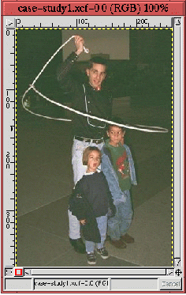
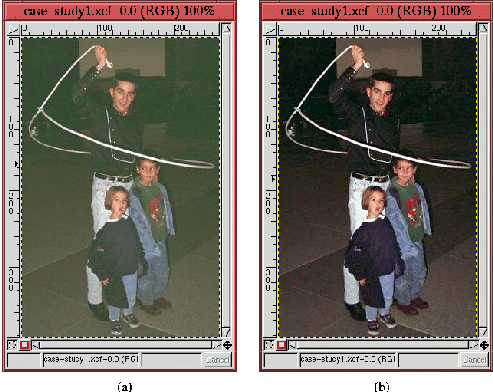
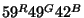
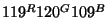
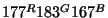
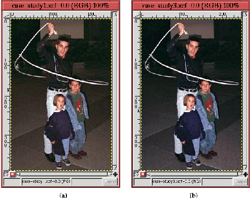
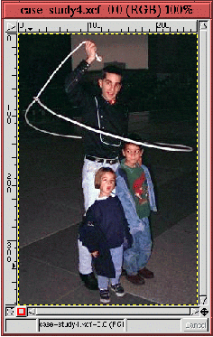
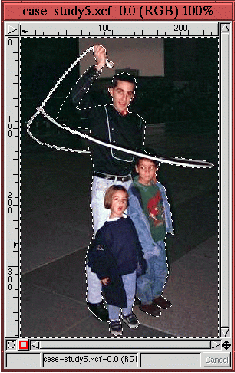
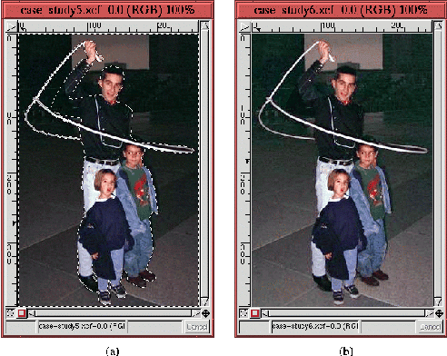
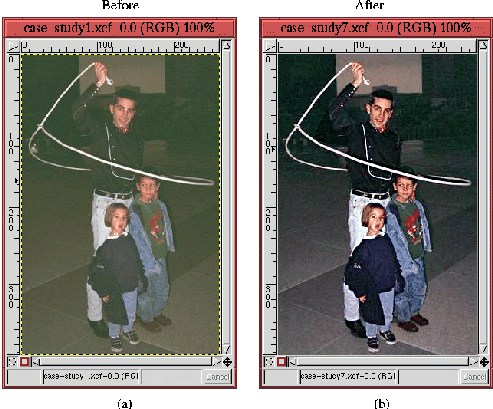

Next: 12.
Compositing Up: 11.
Ретушь и повышение Previous: 11.4.4
Ловушки ``Нерезкой маски''
Next: 12.
Compositing Up: 11.
Ретушь и повышение Previous: 11.4.4
Ловушки ``Нерезкой маски''
11.5
Пример для изучения
Чтобы рассмотреть все описанные методы ретуши и улучшения изображения ``в
перспективе'', в этом разделе предлагается пример для изучения, демонстрирующий
типичную последовательность коррекции. Исходное фото представлено на
рисунке 11.37,
Figure: Исходное изображение
 |
оно и будет предметом обучения. Случай сложный, поскольку изображение имеет
массу недостатков.
Прежде, чем мы начнем, относительно этого фото можно сделать следующие
наблюдения:
- изображение темное и явно недодержанное
- цвета мутные, имеется повсеместный недостаток резкости
- имеется цветовой сдвиг в сторону зеленого
- неприглядное яркое пятно в левой средней части изображения может его
сильно испортить, если не будет удалено
- предмет изображения - ковбой и дети - плохо отделены от фона.
Короче - фотография нуждается в серьезной помощи. В процессе обработки она
будет значительно улучшена, и тому, как этого добиться и посвящен этот раздел.
Первый шаг, как описано в разделе 11.1,
расширение динамического диапазона изображения. Это сделано при помощи
инструмента ``Уровни'' с применением опции ``Авто''. Результат на
рисунке 11.38
(b).
Figure: Динамический диапазон расширен
и полутона настроены при помощи инструмента ``Уровни'': (a)- оригинал (b)-
результат применения инструмента ``Уровни''
 |
На рисунке 11.38
(a) приведен оригинал для сравнения. Кроме применения ``Авто уровней'', движок
настройки полутонов канала ``Яркость'' был установлен так, чтобы слегка
осветлить полученное изображение. Обратите внимание, что зеленый цветовой сдвиг
в значительной степени был подавлен применением инструмента ``Уровни'' и цвета
теперь выглядят более чистыми.
Второй шаг - коррекция оставшегося цветового сдвига. Как описано в
разделе 11.2.2,
это достигается путем измерения цветовых составляющих нейтральных участков
изображения при помощи инструмента ``Пипетка''. Ковбой и дети стоят на каменной
поверхности, похожей на гранит. Разумно предположить, что камень должен быть
нейтрально серым.
Используя ``Пипетку'' можно установить, что цвет камня охватывает диапазон
значений от теней до полутонов. Измерения цветовых составляющих в нескольких
точках дают значения для теней -

- слева от ног ковбоя. Аналогичные измерения проделанные на светлом
участке камня перед рукой маленького мальчика дают значения для области
полутонов -

. Из этих двух замеров можно предположить наличие коричнево-оранжевого
сдвига. Для значений из области бликов - в правой части петли лассо -

- это бледно
зеленый.
Устранение цветового сдвига при помощи инструмента ``Кривые'' проведено в
соответствие с описанием в разделе 11.2.2.
Для нашего примера значения полутонов для красного (59) и зеленого (49) каналов
уменьшены до значения синего (42). Для области полутонов значения зеленого (120)
и синего (109) каналов уменьшены до значения красного (119). И наконец в области
бликов значения зеленого (183) и синего (167) приведены к красному (177).
Результат показан на рисунке 11.39
(b).
Figure: Коррекция цветового сдвига при
помощи инструмента ``Кривые'': исходное (a) и скорректированное (b)
изображения
 |
На рисунке 11.39
(a) показано изображение до коррекции. Как видите, камень стал более
нейтральным, также можно заметить, что до коррекции кожа имела легкий оранжевый
оттенок, который был удален.
Следующий шаг - удаление пятна в средней левой части изображения. Это сделано
при помощи инструмента ``Штамп'', как описано в разделе 11.3.
Изображение с удаленным нежелательным фрагментом показано на рисунке 11.40.
Figure: Нежелательный фрагмент удален
при помощи инструмента ``Штамп''
 |
На этой стадии коррекции становится ясно, что выделить предмет изображения
так, как это описано в разделе 11.2.6
не представляется возможным. Ковбой и дети заполняют весь динамический диапазон
изображения от теней (рубашка ковбоя) до бликов (веревка и воротник девочки).
Единственный способ получить больше от этого изображения - попытаться отделить
предмет изображения от фона, а этого можно добиться только созданием области
выделения.
Figure: Выделение фона
 |
На рисунке 11.41
показана область выделения, построенная с помощью кривых Безье. Область
выделения построена из нескольких частей. Сначала нарисован главный контур
вокруг ковбоя и детей. Затем из полученной области выделения было удалено три
участка путем вычитания областей выделения, как описано в разделе 8.2.
Эти участки - две внутренние области петли и маленькое пространство между
ковбоем и ногой девочки.
Инвертирование выделения (Ctrl-i) приведет к тому, что выделенным
окажется фон, который теперь можно осветлить используя метод возмущений,
описанный в разделе 11.2.5,
для настройки кривой канала ``Яркость''. Как видно из рисунка 11.42
(b), в результате предмет изображения становится более определенным.
Figure: Осветление фона при помощи
инструмента "Кривые" (a)-до (b)-после
 |
Для сравнения приведено изображение на предыдущем шаге - рисунок 11.42
(a).
Заключительное штрих - придание предмету изображения несколько большей
резкости. Это сделано при помощи фильтра ``Нерезкая маска'', как описано в
разделе 11.4.1.
Параметры ``Нерезкой маски'': радиус - 3, значение - 0.5. Заключительный
результат показан на рисунке 11.43
(b), на рисунке 11.43
(a) приведено оригинальное изображение с рисунка 11.37.
Figure: Сравнение оригинального и
улучшенного фото
 |
Сравнение того, что получилось с тем, что было, впечатляет. Оригинал выглядел
невосстановимым и, тем не менее, финальный результат, может и недостоин
публикации в National Geographic, но, по крайней мере, значительно исправлен.
Полученное изображение имеет некоторые черты, достойные особого внимания.
Во-первых, цвета улучшенного изображения более резкие и определенные в сравнении
с мутными цветами оригинала. Это достигнуто в основном за счет расширения
динамического диапазона. Во-вторых, зеленый оттенок, видимый на оригинале
устранен; предмет изображения также четче и лучше определен на фоне, что
достигнуто применением ``Нерезкой маски'' и обработкой фона с помощью
инструментов ``Выделение'' и ``Кривые''.
Next: 12.
Compositing Up: 11.
Ретушь и повышение Previous: 11.4.4
Ловушки ``Нерезкой маски''
Grigory Bakunov 2003-05-26